Noise Derivatives, going with the flow
- Use a mesh to create a triangle grid;
- Compute surface normals for a vertex grid;
- Write a simple surface shader;
- Compute analytical derivatives of Value noise;
- Compute analytical derivatives of Perlin noise;
- Turn derivatives into normals.
- Use 2D Curl noise to flow particles around terrain features;
- Use 3D Curl noise to simulate volumetric flows.
This tutorial comes after the Noise tutorial. I assume you did that one first.
This tutorial has been made with Unity 4.5.2. It might not work for older versions.
Setting the Scene
In the Noise tutorial we experimented with coloring a texture based on pseudorandom noise, but that's not the only thing you can do. Another common technique is to deform a flat surface, interpreting the noise function as a height field.
Because we'll be using the same noise and roughly the same approach we used for our textured quad, start with the finished project of the Noise tutorial. Then move all the quad-related stuff into their own folder and rename things a bit for clarity. We'll put the surface stuff in its own folder too, starting with a new scene.
This time we'll be creating a surface, so create a new SurfaceCreator script, along with a new default material for it.
We'll use a mesh to represent our surface, so like with TextureCreator we generate a new one in SurfaceCreator.OnEnable if it doesnt' exist yet, then call a method to refill or refresh it.
using UnityEngine;
public class SurfaceCreator : MonoBehaviour {
private Mesh mesh;
private void OnEnable () {
if (mesh == null) {
mesh = new Mesh();
mesh.name = "Surface Mesh";
}
Refresh();
}
public void Refresh () {
}
}
Of course we also want to make sure that our mesh gets rendered. We do that by assigning it to a MeshFilter component that should be attached to our game object, and making sure that there's a MeshRenderer component attached as well. To make sure those components exist, add the RequireComponent attribute to our script with the types that we need.
using UnityEngine;
[RequireComponent(typeof(MeshFilter), typeof(MeshRenderer))]
public class SurfaceCreator : MonoBehaviour {
private Mesh mesh;
private void OnEnable () {
if (mesh == null) {
mesh = new Mesh();
mesh.name = "Surface Mesh";
GetComponent<MeshFilter>().mesh = mesh;
}
Refresh();
}
public void Refresh () {
}
}
Now when creating a new game object and adding our component to it, the other two components will be added as well. Then we can set the renderer to use our surface material by dragging it onto the game object.
Our TextureCreator component has a handy custom editor which makes sure that its texture is updated as soon as a change is made via the inspector. Let's copy it and turn it into a version that works with our new SurfaceCreator.
using UnityEditor;
using UnityEngine;
[CustomEditor(typeof(SurfaceCreator))]
public class SurfaceCreatorInspector : Editor {
private SurfaceCreator creator;
private void OnEnable () {
creator = target as SurfaceCreator;
Undo.undoRedoPerformed += RefreshCreator;
}
private void OnDisable () {
Undo.undoRedoPerformed -= RefreshCreator;
}
private void RefreshCreator () {
if (Application.isPlaying) {
creator.Refresh();
}
}
public override void OnInspectorGUI () {
EditorGUI.BeginChangeCheck();
DrawDefaultInspector();
if (EditorGUI.EndChangeCheck()) {
RefreshCreator();
}
}
}
Creating a Mesh
Right now we only have an empty mesh. We have to add vertices and triangles to it before anything shows up. Let's start with a single right triangle.
In Refresh, first give an array containing three vertices to our mesh. Now that it knows how many vertices it has, we can give it an array of vertex indices that tells it how to draw a triangle.
public void Refresh () {
mesh.vertices = new Vector3[] {
new Vector3(0f, 0f),
new Vector3(1f, 0f),
new Vector3(0f, 1f)
};
mesh.triangles = new int[] {
0, 1, 2
};
}
Now a triangle will show up while in play mode, but it is only visible when you look at it in the negative-Z direction. The triangle isn't drawn when looking in the positive-Z direction, because the default material's shader only draws one side of it. This is known as face culling. It is done because you're typically only interested in the outside of a mesh, not its inside.
To determine which side of a triangle you're looking at, the shader checks the winding order of its three vertices. In Unity's case, by default a clockwise order indicates forward-facing triangles that should be drawn, while counterclockwise triangles should be discarded.
To see our triangle when looking down the Z axis, we should switch to a clockwise vertex order.
mesh.triangles = new int[] {
0, 2, 1
};
We can turn our mesh into a quad by adding a second triangle to it. First we have to add a fourth vertex so they all form a square. Then we can add three more vertex incides, which causes a second triangle to be drawn.
mesh.vertices = new Vector3[] {
new Vector3(0f, 0f),
new Vector3(1f, 0f),
new Vector3(0f, 1f),
new Vector3(1f, 1f)
};
mesh.triangles = new int[] {
0, 2, 1,
1, 2, 3
};
A surface that consists of one quad is like a texture that has only one pixel. If we want to show any details, we have to use a grid of smaller quads. So let's add a resolution variable to SurfaceCreator with a range of 1–200. Also add a currentResolution variable so we only recreate the grid when the resolution has changed, just like we did for TextureCreator.
[Range(1, 200)]
public int resolution = 10;
private int currentResolution;
public void Refresh () {
if (resolution != currentResolution) {
CreateGrid();
}
}
private void CreateGrid () {
currentResolution = resolution;
mesh.vertices = new Vector3[] {
new Vector3(0f, 0f),
new Vector3(1f, 0f),
new Vector3(0f, 1f),
new Vector3(1f, 1f)
};
mesh.triangles = new int[] {
0, 2, 1,
1, 2, 3
};
}
Now replace the fixed vertex array with a double loop over y and x, like for TextureCreator, but with two differences.
First, because a quad needs two vertices in both directions, a grid of n2 quads – with n being its resolution – needs (n + 1)2 vertices.
Second, as the vertices are placed on the edge of our quad cells and not in their centers, we don't have to offset them by half a pixel. We will still offset the entire quad by -½ to center it on the origin though.
private void CreateGrid () {
currentResolution = resolution;
Vector3[] vertices = new Vector3[(resolution + 1) * (resolution + 1)];
float stepSize = 1f / resolution;
for (int v = 0, y = 0; y <= resolution; y++) {
for (int x = 0; x <= resolution; x++, v++) {
vertices[v] = new Vector3(x * stepSize - 0.5f, y * stepSize - 0.5f);
}
}
mesh.vertices = vertices;
mesh.triangles = new int[] {
0, 2, 1,
1, 2, 3
};
}
As the triangle array requires six vertex indices per quad, its length is 6n2. Filling it is a bit more involved.
First, we will loop over y and x in units of quads, which means six triangle indices per step.
Second, as each row has n quads but n + 1 vertices, we have to increase the vertex index after each quad, but also after each row.
Third, we have to replace the quad indices 0, 1, 2, 3 into offsets relative to the current vertex index. 0 and 1 stay the same as offsets, but 2 and 3 are actually the 0 and 1 of the next row. So we need to add the length of a vertex row to get them, which is n + 1.
int[] triangles = new int[resolution * resolution * 6];
for (int t = 0, v = 0, y = 0; y < resolution; y++, v++) {
for (int x = 0; x < resolution; x++, v++, t += 6) {
triangles[t] = v;
triangles[t + 1] = v + resolution + 1;
triangles[t + 2] = v + 1;
triangles[t + 3] = v + 1;
triangles[t + 4] = v + resolution + 1;
triangles[t + 5] = v + resolution + 2;
}
}
mesh.triangles = triangles;
Now you will see the quad density increase as you slide up the resolution. However, it will go wrong when you try to decrease the resolution. This happens because we try to assign less vertices to the mesh than are currently being used by its triangles. We should clear the mesh data before assigning a different amount of vertices.
currentResolution = resolution; mesh.Clear();
While our vertices and triangles are all good now, Unity keeps complaining that our material's shader wants some stuff that our mesh doesn't have.
Because the default diffuse shader has a texture to show, it needs to know how to map it onto our mesh. We can either add UV coordinates to our mesh, or use a shader that doesn't need them. As it is quite easy to add them, let's just do so.
Vector3[] vertices = new Vector3[(resolution + 1) * (resolution + 1)];
Vector2[] uv = new Vector2[vertices.Length];
float stepSize = 1f / resolution;
for (int v = 0, y = 0; y <= resolution; y++) {
for (int x = 0; x <= resolution; x++, v++) {
vertices[v] = new Vector3(x * stepSize - 0.5f, y * stepSize - 0.5f);
uv[v] = new Vector2(x * stepSize, y * stepSize);
}
}
mesh.vertices = vertices;
mesh.uv = uv;
The other missing elements are the normal vectors. These vectors are used for lighting calculations and are (0,0,1) by default, which is why the counter-clockwise triangle was light while the clockwise ones are dark. If we set them all to (0,0,-1) our grid should be light too when viewed head-on with the scene view's default lighting.
Vector3[] vertices = new Vector3[(resolution + 1) * (resolution + 1)];
Vector3[] normals = new Vector3[vertices.Length];
Vector2[] uv = new Vector2[vertices.Length];
float stepSize = 1f / resolution;
for (int v = 0, y = 0; y <= resolution; y++) {
for (int x = 0; x <= resolution; x++, v++) {
vertices[v] = new Vector3(x * stepSize - 0.5f, y * stepSize - 0.5f);
normals[v] = Vector3.back;
uv[v] = new Vector2(x * stepSize, y * stepSize);
}
}
mesh.vertices = vertices;
mesh.normals = normals;
mesh.uv = uv;
You can also assign colors to vertices, which will be interpolated across triangles, just like bilinear filtering for a texture.
Vector3[] vertices = new Vector3[(resolution + 1) * (resolution + 1)];
Color[] colors = new Color[vertices.Length];
Vector3[] normals = new Vector3[vertices.Length];
Vector2[] uv = new Vector2[vertices.Length];
float stepSize = 1f / resolution;
for (int v = 0, y = 0; y <= resolution; y++) {
for (int x = 0; x <= resolution; x++, v++) {
vertices[v] = new Vector3(x * stepSize - 0.5f, y * stepSize - 0.5f);
colors[v] = Color.black;
normals[v] = Vector3.back;
uv[v] = new Vector2(x * stepSize, y * stepSize);
}
}
mesh.vertices = vertices;
mesh.colors = colors;
Strangely, the mesh remains white even when it has black color data. This is because the default diffuse shader does not use the vertex colors. So let's make a shader that does use them.
Create a new shader and set our surface material to use it, either by dragging the shader on it or by selecting our shader from the shader list.
The mesh will still look the same, because the new shader is the same as the default diffuse shader, except that it doesn't have a main color property. When selecting the shader, the inspector view will show some information about the imported shader object. Note that under Geometry it mentions position, normal, and uv, but not color.
Our custom shader contains Unity's default code for a surface shader. In this case surface does not mean our mesh surface, it refers to Unity's shader solution that takes care of most of the details of multiplatform multipass shader programming for us. What's left is to set some material properties, like albedo. Here is the default code.
Shader "Custom/Surface Shader" {
Properties {
_MainTex ("Base (RGB)", 2D) = "white" {}
}
SubShader {
Tags { "RenderType"="Opaque" }
LOD 200
CGPROGRAM
#pragma surface surf Lambert
sampler2D _MainTex;
struct Input {
float2 uv_MainTex;
};
void surf (Input IN, inout SurfaceOutput o) {
half4 c = tex2D (_MainTex, IN.uv_MainTex);
o.Albedo = c.rgb;
o.Alpha = c.a;
}
ENDCG
}
FallBack "Diffuse"
}
The surf method is where the material's properties are set, other than its position and normal. We see that the main texture is used as input and used to set the albedo and alpha. To include color, we have to add it to the input structure and factor it into the result. Let's just use the same data type that's used for the texture sample. The only special thing we need to do is indicate that our color input should link to the vertex color data.
struct Input {
float2 uv_MainTex;
half4 color : COLOR;
};
void surf (Input IN, inout SurfaceOutput o) {
half4 c = tex2D (_MainTex, IN.uv_MainTex);
o.Albedo = c.rgb * IN.color.rgb;
o.Alpha = c.a * IN.color.a;
}
Making a Noisy Surface
It's time to make some noise again! Let's just copy the same noise configuration variables that we used for TextureCreator.
public float frequency = 1f; [Range(1, 8)] public int octaves = 1; [Range(1f, 4f)] public float lacunarity = 2f; [Range(0f, 1f)] public float persistence = 0.5f; [Range(1, 3)] public int dimensions = 3; public NoiseMethodType type; public Gradient coloring;
We also use the same approach to sample the noise, with some slight tweaks because we're working with vertex data instead of pixels.
public void Refresh () {
if (resolution != currentResolution) {
CreateGrid();
}
Vector3 point00 = transform.TransformPoint(new Vector3(-0.5f,-0.5f));
Vector3 point10 = transform.TransformPoint(new Vector3( 0.5f,-0.5f));
Vector3 point01 = transform.TransformPoint(new Vector3(-0.5f, 0.5f));
Vector3 point11 = transform.TransformPoint(new Vector3( 0.5f, 0.5f));
NoiseMethod method = Noise.methods[(int)type][dimensions - 1];
float stepSize = 1f / resolution;
for (int v = 0, y = 0; y <= resolution; y++) {
Vector3 point0 = Vector3.Lerp(point00, point01, y * stepSize);
Vector3 point1 = Vector3.Lerp(point10, point11, y * stepSize);
for (int x = 0; x <= resolution; x++, v++) {
Vector3 point = Vector3.Lerp(point0, point1, x * stepSize);
float sample = Noise.Sum(method, point, frequency, octaves, lacunarity, persistence);
if (type != NoiseMethodType.Value) {
sample = sample * 0.5f + 0.5f;
}
colors[v] = coloring.Evaluate(sample);
}
}
mesh.colors = colors;
}
For this to work we need to promote colors to a class variable instead of only defining it inside CreateGrid. Let's go ahead and do this for vertices and normals as well.
private Vector3[] vertices;
private Vector3[] normals;
private Color[] colors;
private void CreateGrid () {
currentResolution = resolution;
mesh.Clear();
vertices = new Vector3[(resolution + 1) * (resolution + 1)];
colors = new Color[vertices.Length];
normals = new Vector3[vertices.Length];
Vector2[] uv = new Vector2[vertices.Length];
…
}
Now you might want to move the noise sampling away from the origin, but we haven't put in code that checks for a transform change yet, so the mesh won't be refreshed when moving it. We could put this code in to make it behave just like TextureCreator, but this is not really convenient. Instead, let's keep our mesh in a fixed position and add an offset to the noise instead.
public Vector3 offset;
public void Refresh () {
if (resolution != currentResolution) {
CreateGrid();
}
Vector3 point00 = new Vector3(-0.5f,-0.5f) + offset;
Vector3 point10 = new Vector3( 0.5f,-0.5f) + offset;
Vector3 point01 = new Vector3(-0.5f, 0.5f) + offset;
Vector3 point11 = new Vector3( 0.5f, 0.5f) + offset;
…
}
Let's add support for rotation as well. We use a vector to configure angular rotations, but we'll use a quaternion to actually transform our positions. If we multiply the quaternion with our original positions and then offset the result, we act the same as a Transform component would.
public Vector3 rotation;
public void Refresh () {
if (resolution != currentResolution) {
CreateGrid();
}
Quaternion q = Quaternion.Euler(rotation);
Vector3 point00 = q * new Vector3(-0.5f, -0.5f) + offset;
Vector3 point10 = q * new Vector3( 0.5f, -0.5f) + offset;
Vector3 point01 = q * new Vector3(-0.5f, 0.5f) + offset;
Vector3 point11 = q * new Vector3( 0.5f, 0.5f) + offset;
…
}
To perturb the shape of our surface, we can simply displace the vertices along the Z axis using our noise samples.
for (int v = 0, y = 0; y <= resolution; y++) {
Vector3 point0 = Vector3.Lerp(point00, point01, y * stepSize);
Vector3 point1 = Vector3.Lerp(point10, point11, y * stepSize);
for (int x = 0; x <= resolution; x++, v++) {
Vector3 point = Vector3.Lerp(point0, point1, x * stepSize);
float sample = Noise.Sum(method, point, frequency, octaves, lacunarity, persistence);
if (type != NoiseMethodType.Value) {
sample = sample * 0.5f + 0.5f;
}
vertices[v].z = sample;
colors[v] = coloring.Evaluate(sample);
}
}
mesh.vertices = vertices;
mesh.colors = colors;
We are now displacing a vertical surface, which is a bit awkward to work with. It is easier to work with a horizontal surface, because then it would resemble a terrain, which is something we are all very familiar with.
We could rotate our mesh to make it horizontal, but we can also change its construction so is horizontal to begin with.
private void CreateGrid () {
…
for (int v = 0, z = 0; z <= resolution; z++) {
for (int x = 0; x <= resolution; x++, v++) {
vertices[v] = new Vector3(x * stepSize - 0.5f, 0f, z * stepSize - 0.5f);
colors[v] = Color.black;
normals[v] = Vector3.up;
uv[v] = new Vector2(x * stepSize, z * stepSize);
}
}
…
}
We could also change Refresh so it sample from XZ instead of XY, but then it won't work for 2D noise because that's defined in XY, so we leave our sampling unchanged. We just use the sample to displace Y instead of Z.
While we're at it, as our surface goes from -½ to ½ in both horizontal directions, it makes sense for the displaced surface to have the same range vertically. That way it can theoretically be defined anywhere inside a unit cube, but not outside of it. That means we have to subtract half a unit from Value noise and halve Perlin noise.
Vector3 point = Vector3.Lerp(point0, point1, x * stepSize); float sample = Noise.Sum(method, point, frequency, octaves, lacunarity, persistence); sample = type == NoiseMethodType.Value ? (sample - 0.5f) : (sample * 0.5f); vertices[v].y = sample; colors[v] = coloring.Evaluate(sample + 0.5f);
Now when you use a coloring that somewhat resembles terrain strata, you end up with a result that looks a lot like a landscape. For example, I'm using the colors (1,25,34) at 0%, (32,111,139) at 30%, (121,159,61) at 50%, (231,190,129) at 70%, and white at 100%.
However, this terrain looks rather flat, because all the vertex normals are still pointing straight up, causing the lighting to behave as if it were. The easiest way to get proper normals is to invoke Mesh.RecalculateNormals after we changed all vertices, so let's do that.
public void Refresh () {
…
mesh.vertices = vertices;
mesh.colors = colors;
mesh.RecalculateNormals();
}
The default scene view light always shines in the direction that you're looking, which isn't very interesting. So go ahead and add a directional light so you can change the light's direction. A handy trick is to position yourself in the scene view as if you were a light, and then use GameObject / Align With View with the light selected. That way your current view direction becomes the light's direction as well.
Scaling the Displacement
Right now the noise results in quite strong displacement of our surface. But often we desire a more subtle displacement, so let's add a variable to control the strength of the noise with a range of 0–1.
[Range(0f, 1f)] public float strength = 1f;
Inside Refresh, we have to scale our sample after it has been brought into the -½–½ range.
Vector3 point = Vector3.Lerp(point0, point1, x * stepSize); float sample = Noise.Sum(method, point, frequency, octaves, lacunarity, persistence); sample = type == NoiseMethodType.Value ? (sample - 0.5f) : (sample * 0.5f); sample *= strength; vertices[v].y = sample; colors[v] = coloring.Evaluate(sample + 0.5f);
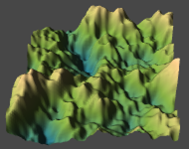 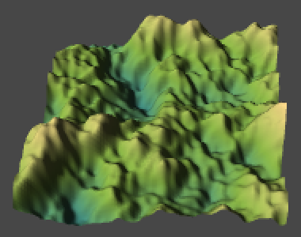 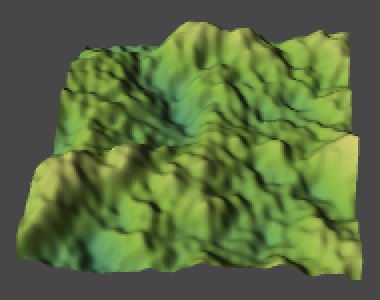 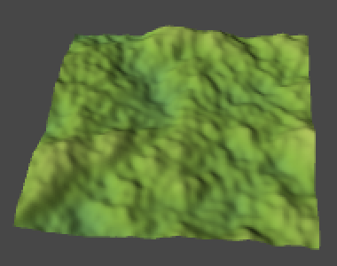
Of course this means that as strength decreases, you'll see less of the gradient. This is fine if that's what you want, but if it's not then you'll have to evaluate the gradient before scaling the sample. To allow a choice, add a boolean variable named coloringForStrength.
public bool coloringForStrength;
public void Refresh () {
…
sample = type == NoiseMethodType.Value ? (sample - 0.5f) : (sample * 0.5f);
if (coloringForStrength) {
colors[v] = coloring.Evaluate(sample + 0.5f);
sample *= strength;
}
else {
sample *= strength;
colors[v] = coloring.Evaluate(sample + 0.5f);
}
vertices[v].y = sample;
…
}
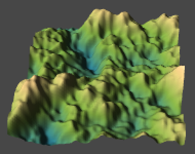 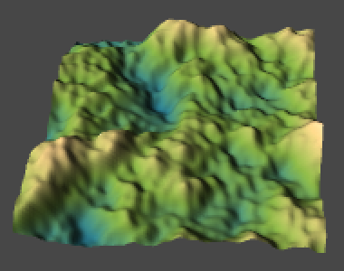 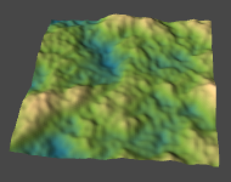
There is another phenomenon that we might want to do something about. If we increase the frequency of the noise, the surface deformation becomes a lot more extreme. This happens because the same vertical displacement happens much faster, which basically means that the energy level of our system has increased. If we want to keep the rate of change at a constant level, we have to decrease the amplitude of the noise, just like we do when we sum noise octaves. Let's make this optional with a dampen boolean. If it's on, we divide the strength by the frequency before applying it.
public bool damping;
public void Refresh () {
…
float amplitude = damping ? strength / frequency : strength;
for (int v = 0, y = 0; y <= resolution; y++) {
Vector3 point0 = Vector3.Lerp(point00, point01, y * stepSize);
Vector3 point1 = Vector3.Lerp(point10, point11, y * stepSize);
for (int x = 0; x <= resolution; x++, v++) {
Vector3 point = Vector3.Lerp(point0, point1, x * stepSize);
float sample = Noise.Sum(method, point, frequency, octaves, lacunarity, persistence);
sample = type == NoiseMethodType.Value ? (sample - 0.5f) : (sample * 0.5f);
if (coloringForStrength) {
colors[v] = coloring.Evaluate(sample + 0.5f);
sample *= amplitude;
}
else {
sample *= amplitude;
colors[v] = coloring.Evaluate(sample + 0.5f);
}
vertices[v].y = sample;
}
}
…
}
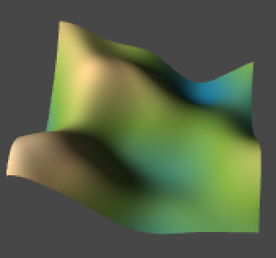 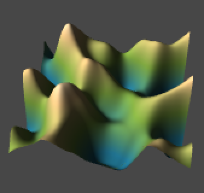 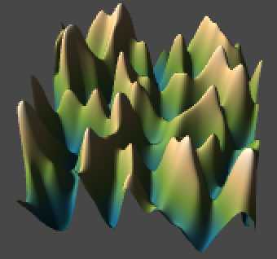
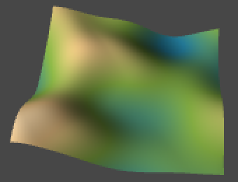 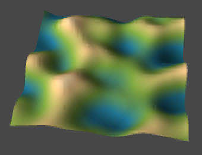 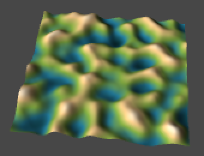
Calculating Normals
Instead of relying on RecalculateNormals, we could also calculate the normals ourselves. Our advantage is that we know the topology of our grid, which means that we can be more efficient. But first, let's add an option to show the normal vectors when we have our mesh selected in the scene view. We can do that by adding another boolean variable and utilizing Unity's OnDrawGizmosSelected event method.
Inside OnDrawGizmosSelected, we simply loop through all vertices and draw a gizmo ray using their position and normal. But we only do this when we want to, and also only if the vertex array exists. This extra check is necessary because the gizmos event method can end up being called by Unity before our component has awoken.
public bool showNormals;
private void OnDrawGizmosSelected () {
if (showNormals && vertices != null) {
Gizmos.color = Color.yellow;
for (int v = 0; v < vertices.Length; v++) {
Gizmos.DrawRay(vertices[v], normals[v]);
}
}
}
These gizmos are so large that they're unusable, they should be scaled down. It makes sense to scale based on the resolution of our mesh, that way a vector of unit length becomes as long as the horizontal width of one quad in the mesh.
private void OnDrawGizmosSelected () {
float scale = 1f / resolution;
if (showNormals && vertices != null) {
Gizmos.color = Color.yellow;
for (int v = 0; v < vertices.Length; v++) {
Gizmos.DrawRay(vertices[v], normals[v] * scale);
}
}
}
Right now we're seeing vectors that point straight up. Shouldn't we see the normals of our mesh? No, we're seeing the vectors in our normals array, but these are not the same as the normals currently being used by the mesh. When assigning data to the mesh object, it actually copies what's in our arrays to its own data structures. We're assigning to mesh properties, not variables. That's why we have to assign – actually copy – our arrays again when we change them. Likewise, if the mesh changes its own data, we have to extract it to update our own arrays.
public void Refresh () {
…
mesh.RecalculateNormals();
normals = mesh.normals;
}
To calculate normals ourselves, we have to loop through all vertices and figure out the normal of each one. Because our mesh is a grid, most vertices have four neighbors. If you connect opposite neighbors, you get two lines that form a cross. Those two lines define a plane, which we can consider an approximation of the tangent plane of the slope at the center vertex. If we take the cross product of those two vectors and normalize it, we end up with the normal of that slope.
As we consider the two lines lines tangent to the slope at our vertex, then if we scale them so that their X or Z component is 1, then their Y component is the proper rate of change in that direction. Let's go one step at a time, and misuse our normals to show the rate of change – the derivative – of the X direction only. For that reason we won't assign our normals to the mesh just yet.
public void Refresh () {
…
mesh.RecalculateNormals();
CalculateNormals();
}
private void CalculateNormals () {
for (int v = 0, z = 0; z <= resolution; z++) {
for (int x = 0; x <= resolution; x++, v++) {
normals[v] = Vector3.up * GetXDerivative(x, z);
}
}
}
To get the derivative along the X axis, we have to take the difference between the height to the left and to the right of a vertex, so right minus left. We then have to divide this by the distance between the left and right vertices, which is twice the mesh resolution.
private float GetXDerivative (int x, int z) {
int rowOffset = z * (resolution + 1);
float left, right, distance;
left = vertices[rowOffset + x - 1].y;
right = vertices[rowOffset + x + 1].y;
distance = 2f / resolution;
return (right - left) / distance;
}
As we're now dividing by a division, we might as well convert it into a multiplication.
private float GetXDerivative (int x, int z) {
int rowOffset = z * (resolution + 1);
float left, right, scale;
left = vertices[rowOffset + x - 1].y;
right = vertices[rowOffset + x + 1].y;
scale = 0.5f * resolution;
return (right - left) * scale;
}
But this approach will only work for vertices that aren't on the edge of the grid. The edge vertices will lack either a left or a right neighbor. In those cases the best we can do is take the difference between the vertex and its single neighbor. As that halves the distance covered, we also have to double the scale.
private float GetXDerivative (int x, int z) {
int rowOffset = z * (resolution + 1);
float left, right, scale;
if (x > 0) {
left = vertices[rowOffset + x - 1].y;
if (x < resolution) {
right = vertices[rowOffset + x + 1].y;
scale = 0.5f * resolution;
}
else {
right = vertices[rowOffset + x].y;
scale = resolution;
}
}
else {
left = vertices[rowOffset + x].y;
right = vertices[rowOffset + x + 1].y;
scale = resolution;
}
return (right - left) * scale;
}
To turn this into tangent lines, we have to use vectors of the form (1, derivative, 0).
normals[v] = new Vector3(1f, GetXDerivative(x, z), 0f);
We can do the same thing for the Z direction.
private float GetZDerivative (int x, int z) {
int rowLength = resolution + 1;
float back, forward, scale;
if (z > 0) {
back = vertices[(z - 1) * rowLength + x].y;
if (z < resolution) {
forward = vertices[(z + 1) * rowLength + x].y;
scale = 0.5f * resolution;
}
else {
forward = vertices[z * rowLength + x].y;
scale = resolution;
}
}
else {
back = vertices[z * rowLength + x].y;
forward = vertices[(z + 1) * rowLength + x].y;
scale = resolution;
}
return (forward - back) * scale;
}
private void CalculateNormals () {
for (int v = 0, z = 0; z <= resolution; z++) {
for (int x = 0; x <= resolution; x++, v++) {
normals[v] = new Vector3(0f, GetZDerivative(x, z), 1f);
}
}
}
Now if we take the cross product of these two tangent vectors, we'll get a vector pointing along our surface's normal. We have to perform Z-tangent × X-tangent to get them to point upward instead of downward.
normals[v] = Vector3.Cross( new Vector3(0f, GetZDerivative(x, z), 1f), new Vector3(1f, GetXDerivative(x, z), 0f));
Because of the nature of our vectors, quite a few parts of the cross product are constant. In fact, we only have to flip the signs of the derivatives. The final step is to normalize the result, so it becomes a proper normal vector for our mesh. Now we can use our own code instead of relying on Mesh.RecalculateNormals. Note that both approaches produce slightly different normals.
public void Refresh () {
…
mesh.vertices = vertices;
mesh.colors = colors;
CalculateNormals();
mesh.normals = normals;
}
private void CalculateNormals () {
for (int v = 0, z = 0; z <= resolution; z++) {
for (int x = 0; x <= resolution; x++, v++) {
normals[v] = new Vector3(-GetXDerivative(x, z), 1f, -GetZDerivative(x, z)).normalized;
}
}
}
Using Analytical Derivatives
What we've done so far is approximate the partial derivatives of our noise function. They're partial because we consider the change in the X and Z direction indepdently, while keeping the other constant. Specifically, we're performing numerical differentiation using the finite difference formula (f(x + h) - f(x - h)) / 2h for all vertices except those along edges, for which we use (f(x + h) - f(x)) / h instead.
In our case h is 1 / resolution, which is quite large. Using a smaller value for h will produce results that are closer to the true derivative. We could do that, but then we can no longer use the values of adjacent vertices. We'd have to sample the noise four additional times per vertex for most vertices. While that's possible, we must take care that we don't use too small a value for h. Because we're using floating-point numbers, we only have limited numerical precision. If h is too small, x and x + h become hard or even impossible to distinguish, which leads to significant rounding errors.
Instead of taking more samples and approximate the derivatives, it is also possible to compute the analytical derivatives directly. We already know the derivative of the smoothing function we're using for our noise, why not figure out the derivative function for the entire noise as well? We get the best possible result, and it should be cheaper to compute than sampling five times.
This means that our noise methods will have to return both their value and their derivative. So let's create a convenient struct that contains both.
using UnityEngine;
public struct NoiseSample {
public float value;
public Vector3 derivative;
}
Then we change the return type of our NoiseMethod delegate type that we defined at the top of our noise script.
public delegate NoiseSample NoiseMethod (Vector3 point, float frequency);
Now all six noise methods need to be updated so they return a NoiseSample instead of a float. For now, simply assign their result to a sample's value and set all the sample's derivative components to zero.
However, before we worry about how the compute the derivatives, we already know that when the frequency is increased, slopes become steeper, which means the derivatives become larger. This is actually because of the chain rule. So we have to multiply the derivative by the frequency, so let's put that in already.
Only the change for Value1D is shown below, but you have to adjust the other five methods in the same way as well.
public static NoiseSample Value1D (Vector3 point, float frequency) {
point *= frequency;
int i0 = Mathf.FloorToInt(point.x);
float t = point.x - i0;
i0 &= hashMask;
int i1 = i0 + 1;
int h0 = hash[i0];
int h1 = hash[i1];
t = Smooth(t);
NoiseSample sample;
sample.value = Mathf.Lerp(h0, h1, t) * (1f / hashMask);
sample.derivative.x = 0f;
sample.derivative.y = 0f;
sample.derivative.z = 0f;
sample.derivative *= frequency;
return sample;
}
With that out of the way, the next method that needs updating is Sum.
public static NoiseSample Sum (
NoiseMethod method, Vector3 point, float frequency, int octaves, float lacunarity, float persistence
) {
NoiseSample sum = method(point, frequency);
float amplitude = 1f;
float range = 1f;
for (int o = 1; o < octaves; o++) {
frequency *= lacunarity;
amplitude *= persistence;
range += amplitude;
sum += method(point, frequency) * amplitude;
}
return sum / range;
}
Unfortunately this naive conversion doesn't work, because we're now trying to perform addition, multiplication, and dividision with entire noise samples. As it would be very convenient if this just worked – and it makes mathematical sense – why not make it so?
We're going to define what addition does when performed with two NoiseSample values. We do this by adding a static method to NoiseSample and declare that is overloads the plus operator.
public static NoiseSample operator + (NoiseSample a, NoiseSample b) {
}
Addition of the value is straightforward. And because (f + g)' = f' + g' the derivatives can also simply be added together.
public static NoiseSample operator + (NoiseSample a, NoiseSample b) {
a.value += b.value;
a.derivative += b.derivative;
return a;
}
As it's also possible to add a single float to our sample, we should support that as well. Because the derivative of a constant is zero, we don't need to change the derivate in this case. Also, because the operands could be placed in any order, we should be tidy and support both options.
public static NoiseSample operator + (NoiseSample a, float b) {
a.value += b;
return a;
}
public static NoiseSample operator + (float a, NoiseSample b) {
b.value += a;
return b;
}
We also perform subtractions, so that operator needs to go in as well. Again, we should support all versions.
public static NoiseSample operator - (NoiseSample a, float b) {
a.value -= b;
return a;
}
public static NoiseSample operator - (float a, NoiseSample b) {
b.value = a - b.value;
b.derivative = -b.derivative;
return b;
}
public static NoiseSample operator - (NoiseSample a, NoiseSample b) {
a.value -= b.value;
a.derivative -= b.derivative;
return a;
}
Next up is multiplication. Because a constant factor is simply passed on to the derivative – meaning that (cf)' = cf' – we simply apply multiplication with a float to both the value and the derivative.
public static NoiseSample operator * (NoiseSample a, float b) {
a.value *= b;
a.derivative *= b;
return a;
}
public static NoiseSample operator * (float a, NoiseSample b) {
b.value *= a;
b.derivative *= a;
return b;
}
To be complete, we should also support the multiplication of two noise samples. In that case we have to apply the product rule to get the final derivative.
public static NoiseSample operator * (NoiseSample a, NoiseSample b) {
a.derivative = a.derivative * b.value + b.derivative * a.value;
a.value *= b.value;
return a;
}
Let's not bother with division now and just rewrite Sum so it uses a multiplication instead.
public static NoiseSample Sum (
NoiseMethod method, Vector3 point, float frequency, int octaves, float lacunarity, float persistence
) {
NoiseSample sum = method(point, frequency);
float amplitude = 1f;
float range = 1f;
for (int o = 1; o < octaves; o++) {
frequency *= lacunarity;
amplitude *= persistence;
range += amplitude;
sum += method(point, frequency) * amplitude;
}
return sum * (1f / range);
}
Now we have to adjust how we use the result of Sum in TextureCreator.FillTexture. As we don't use derivatives there we can simply grab the sample's value.
float sample = Noise.Sum(method, point, frequency, octaves, lacunarity, persistence).value;
We do want to keep the whole sample inside SurfaceCreator.Refresh, so we turn sample into a NoiseSample instead of a float and extract its value when needed for the vertex color and offset.
Vector3 point = Vector3.Lerp(point0, point1, x * stepSize);
NoiseSample sample =
Noise.Sum(method, point, frequency, octaves, lacunarity, persistence);
sample = type == NoiseMethodType.Value ? (sample - 0.5f) : (sample * 0.5f);
if (coloringForStrength) {
colors[v] = coloring.Evaluate(sample.value + 0.5f);
sample *= amplitude;
}
else {
sample *= amplitude;
colors[v] = coloring.Evaluate(sample.value + 0.5f);
}
vertices[v].y = sample.value;
We can use the same approach as before to turn the derivative into a normal. The only difference is that we have to use the derivative's Y component instead of its Z component, because we're sampling in XY instead of in XZ.
vertices[v].y = sample.value; normals[v] = new Vector3(-sample.derivative.x, 1f, -sample.derivative.y).normalized;
Now we can choose whether to use analyitical derivatives or stick with our numerical approach to define our normals. Let's add an option to choose between them so their results can be easily compared.
public bool analyticalDerivatives;
public void Refresh () {
…
vertices[v].y = sample.value;
if (analyticalDerivatives) {
normals[v] =
new Vector3(-sample.derivative.x, 1f, -sample.derivative.y).normalized;
}
}
}
mesh.vertices = vertices;
mesh.colors = colors;
if (!analyticalDerivatives) {
CalculateNormals();
}
mesh.normals = normals;
}
Or course our sampled derivatives are still zero, so the resulting normals all point straight up. So it's time to start calculating analytical derivatives!
The first thing to consider is the Noise.Smooth method, which computes 6t5 - 15t4 + 10t3. It's derivative is 30t4 - 60t3 + 30t2, so add a method to calculate that as well.
private static float SmoothDerivative (float t) {
return 30f * t * t * (t * (t - 2f) + 1f);
}
We first consider the most simple noise method that we have, which is Value1D. To recap, it determines two hash values, interpolates between them using the smooth function, and scales the result.
public static NoiseSample Value1D (Vector3 point, float frequency) {
point *= frequency;
int i0 = Mathf.FloorToInt(point.x);
float t = point.x - i0;
i0 &= hashMask;
int i1 = i0 + 1;
int h0 = hash[i0];
int h1 = hash[i1];
t = Smooth(t);
NoiseSample sample;
sample.value = Mathf.Lerp(h0, h1, t) * (1f / hashMask);
sample.derivative.x = 0f;
sample.derivative.y = 0f;
sample.derivative.z = 0f;
sample.derivative *= frequency;
return sample;
}
As the scaling applies to the derivative as well, we can perform the multiplication with the whole sample just before we return it.
sample.value = Mathf.Lerp(h0, h1, t); sample.derivative.x = 0f; sample.derivative.y = 0f; sample.derivative.z = 0f; sample.derivative *= frequency; return sample * (1f / hashMask);
To get the derivative of Smooth(t), we simply invoke SmoothDerivative(t) with the unsmoothed t and hold on to it.
float dt = SmoothDerivative(t); t = Smooth(t);
But how do we deal with the linear interpolation? Remember that linear interpolation is just a simple function. We could have directly programmed h0 + (h1 - h0)t instead of using Mathf.Lerp. As h0 and h1 are hash values, they are constants. Let's make that explicit by putting all constant components of the function into variables.
float dt = SmoothDerivative(t); t = Smooth(t); float a = h0; float b = h1 - h0; NoiseSample sample; sample.value = a + b * t;
The derivative of a + bt is simply bt', so that becomes our partial derivative for X. As there's no change in the Y and Z directions, those components remain zero.
sample.derivative.x = b * dt;
You'll notice that the numerical approach produces normals that don't always follow the shape of the mesh. The numerical normals produce more extreme results. This is so because they adhere to the actual shape of the noise, regardless of the resolution of the mesh. This difference becomes larger as the mesh resolution decreases, or as the frequency of the noise increases. If the resolution is too low, the result will look wrong.
This is a pretty good reason for using the actual mesh topology to compute the normals, instead of relying on analytical derivatives. No matter how badly the mesh approximates the noise, at least its normals always look reasonable. An advantage of analytical derivatives is that the edges aren't treated differently, which means you can break the terrain into multiple meshes without causing normal seams.
While our normal calculation seems correct, it goes wrong when we rotate the noise. This is because the derivative calculation doesn't care what direction X points to, but we do. So when supplying a rotated point to our noise, we have to rotate the derivative vector in the opposite direction to get the correct result from our frame of reference. We do this by multiplying with the inverse of our rotation quaterion.
public void Refresh () {
…
Quaternion q = Quaternion.Euler(rotation);
Quaternion qInv = Quaternion.Inverse(q);
…
sample.derivative = qInv * sample.derivative;
if (analyticalDerivatives) {
normals[v] =
new Vector3(-sample.derivative.x, 1f, -sample.derivative.y).normalized;
}
…
}
Dealing with More Dimensions
When computing the derivatives for Value2D, we have to take interpolation over two dimensions into account. We can replace the use of the nested Mathf.Lerp invocations with the large function h00 + (h10 - h00)tx + (h01 + (h11 - h01)tx - (h00 + (h10 - h00)tx))ty, which can be rewritten to get h00 + (h10 - h00)tx + (h01 - h00)ty + (h11 - h01 - h10 + h00)txty. Then we turn the hash values into constants, and end up with a + btx + cty + dtxty, which is a lot more manageable.
Note that we can rewrite our new function to a + cty + (b + dty)tx. Because ty is held constant when determining the partial derivative for X, it simply becomes (b + dty)tx'.
As we can also rewrite our function to a + btx + (c + dtx)ty, the partial derivative for Y becomes the function (c + dtx)ty'.
public static NoiseSample Value2D (Vector3 point, float frequency) {
…
float dtx = SmoothDerivative(tx);
float dty = SmoothDerivative(ty);
tx = Smooth(tx);
ty = Smooth(ty);
float a = h00;
float b = h10 - h00;
float c = h01 - h00;
float d = h11 - h01 - h10 + h00;
NoiseSample sample;
sample.value = a + b * tx + (c + d * tx) * ty;
sample.derivative.x = (b + d * ty) * dtx;
sample.derivative.y = (c + d * tx) * dty;
sample.derivative.z = 0f;
sample.derivative *= frequency;
return sample * (1f / hashMask);
}
When you apply the same approach to Value3D, you'll end up with a quite large function of the form a + btx + cty + dtz + etxty + ftxtz + gtytz + htxtytz.
In this case the partial derivative for X is (b + ety + (f + hty)tz)tx' and the other two partial derivatives look similar. You might think that we don't actually use the partial derivative of Z for our mesh, but we will when we rotate the noise around the X or Y axis.
public static NoiseSample Value3D (Vector3 point, float frequency) {
…
float dtx = SmoothDerivative(tx);
float dty = SmoothDerivative(ty);
float dtz = SmoothDerivative(tz);
tx = Smooth(tx);
ty = Smooth(ty);
tz = Smooth(tz);
float a = h000;
float b = h100 - h000;
float c = h010 - h000;
float d = h001 - h000;
float e = h110 - h010 - h100 + h000;
float f = h101 - h001 - h100 + h000;
float g = h011 - h001 - h010 + h000;
float h = h111 - h011 - h101 + h001 - h110 + h010 + h100 - h000;
NoiseSample sample;
sample.value = a + b * tx + (c + e * tx) * ty + (d + f * tx + (g + h * tx) * ty) * tz;
sample.derivative.x = (b + e * ty + (f + h * ty) * tz) * dtx;
sample.derivative.y = (c + e * tx + (g + h * tx) * tz) * dty;
sample.derivative.z = (d + f * tx + (g + h * tx) * ty) * dtz;
sample.derivative *= frequency;
return sample * (1f / hashMask);
}
Computing the Derivatives of Perlin Noise
How about the analytical derivatives of Perlin noise? Let's start by doing the same for Perlin1D that we did for Value1D, except that we're now using gradient values instead of hash values.
public static NoiseSample Perlin1D (Vector3 point, float frequency) {
point *= frequency;
int i0 = Mathf.FloorToInt(point.x);
float t0 = point.x - i0;
float t1 = t0 - 1f;
i0 &= hashMask;
int i1 = i0 + 1;
float g0 = gradients1D[hash[i0] & gradientsMask1D];
float g1 = gradients1D[hash[i1] & gradientsMask1D];
float v0 = g0 * t0;
float v1 = g1 * t1;
float dt = SmoothDerivative(t0);
float t = Smooth(t0);
float a = v0;
float b = v1 - v0;
NoiseSample sample;
sample.value = a + b * t;
sample.derivative.x = b * dt;
sample.derivative.y = 0f;
sample.derivative.z = 0f;
sample.derivative *= frequency;
return sample * 2f;
}
The result is clearly wrong. This is because we are treating a and b as constants, while they are not. They are composed of gradients multiplied by t0 and t1, which means that we have to get their derivatives as well. Fortunately, this is easy.
The derivative of v0 is simply (g0t0)' = g0. And for v1 we have (g1t1)' = (g1(t0 - 1))' = g1. These are simply the gradient directions, which makes sense.
The final derivative now becomes more complex. Because a, b, and t are all functions of t0 we can no longer eliminate anything and we have to apply the product rule. Specifically, we now have (a + bt)' = a' + b't + bt'.
float da = g0; float db = g1 - g0; NoiseSample sample; sample.value = a + b * t; sample.derivative.x = da + db * t + b * dt;
Compared to the Value noise derivative, what we've effectively done is add the original noise formula, but with a and b replaced by their derivatives. Technically, we could also do this for Value noise, as they become zeros in that case and it has no effect.
Now consider the two-dimensional case. We calculate the noise with a + btx + (c + dtx)ty and for Value noise the partial derivative for X is (b + dty)tx'. To turn this into the correct derivative for Perlin noise, we have to add the gradient formula a' + b'tx + (c' + d'tx)ty to it.
Of course the 2D gradients are 2D vectors. We have to add the X component of the gradient formula to the partial derivate of X, and its Y component to the partial derivative of Y.
public static NoiseSample Perlin2D (Vector3 point, float frequency) {
…
float dtx = SmoothDerivative(tx0);
float dty = SmoothDerivative(ty0);
float tx = Smooth(tx0);
float ty = Smooth(ty0);
float a = v00;
float b = v10 - v00;
float c = v01 - v00;
float d = v11 - v01 - v10 + v00;
Vector2 da = g00;
Vector2 db = g10 - g00;
Vector2 dc = g01 - g00;
Vector2 dd = g11 - g01 - g10 + g00;
NoiseSample sample;
sample.value = a + b * tx + (c + d * tx) * ty;
sample.derivative = da + db * tx + (dc + dd * tx) * ty;
sample.derivative.x += (b + d * ty) * dtx;
sample.derivative.y += (c + d * tx) * dty;
sample.derivative.z = 0f;
sample.derivative *= frequency;
return sample * sqr2;
}
The partial derivatives for 3D Perlin noise become quite long, but are found using the same simple procedure.
public static NoiseSample Perlin3D (Vector3 point, float frequency) {
…;
float dtx = SmoothDerivative(tx0);
float dty = SmoothDerivative(ty0);
float dtz = SmoothDerivative(tz0);
float tx = Smooth(tx0);
float ty = Smooth(ty0);
float tz = Smooth(tz0);
float a = v000;
float b = v100 - v000;
float c = v010 - v000;
float d = v001 - v000;
float e = v110 - v010 - v100 + v000;
float f = v101 - v001 - v100 + v000;
float g = v011 - v001 - v010 + v000;
float h = v111 - v011 - v101 + v001 - v110 + v010 + v100 - v000;
Vector3 da = g000;
Vector3 db = g100 - g000;
Vector3 dc = g010 - g000;
Vector3 dd = g001 - g000;
Vector3 de = g110 - g010 - g100 + g000;
Vector3 df = g101 - g001 - g100 + g000;
Vector3 dg = g011 - g001 - g010 + g000;
Vector3 dh = g111 - g011 - g101 + g001 - g110 + g010 + g100 - g000;
NoiseSample sample;
sample.value = a + b * tx + (c + e * tx) * ty + (d + f * tx + (g + h * tx) * ty) * tz;
sample.derivative = da + db * tx + (dc + de * tx) * ty + (dd + df * tx + (dg + dh * tx) * ty) * tz;
sample.derivative.x += (b + e * ty + (f + h * ty) * tz) * dtx;
sample.derivative.y += (c + e * tx + (g + h * tx) * tz) * dty;
sample.derivative.z += (d + f * tx + (g + h * tx) * ty) * dtz;
sample.derivative *= frequency;
return sample;
}
Flowing Through Noise
Because the noise derivative is a 3D vector, we could interpret it as a velocity map, which could represent stuff like movement of a liquid or gas. Let's create a SurfaceFlow component that visualizes the flow along our surface with a particle system.
It should get a reference to our surface, so it can know what noise settings are used. It also needs its own particle system and an array to hold the particles that it will be manipulating.
using UnityEngine;
[RequireComponent(typeof(ParticleSystem))]
public class SurfaceFlow : MonoBehaviour {
public SurfaceCreator surface;
private ParticleSystem system;
private ParticleSystem.Particle[] particles;
}
To make the system fit our surface area, set its shape to a unit cube. As this defines the particle spawn area and elevation will be determined by the terrain, I made the cube flat. The other settings don't matter that much, use whatever looks good to you.
We'll leave the management of particles to the particle system. What we'll do is fetch the data of all living particles each update, manipulate their positions, and push that data back to the system. We do this via the GetParticles and SetParticles methods of ParticleSystem. The first method copies particle data into an array that we provide and returns how many living particles were copied. The second method is used to do the opposite. Of course we also have to grab the particle system component first and guarantee that our array can hold all the particles.
Actually, we'll use a LateUpdate method instead of Update. This is an alternative update method that will be invoked after regular update methods and physics calculations. We do this because we want to mess with the particles after the system has done its thing. If we don't, we might get some popping artifacts, as newborn particles won't have the correct values during their first frame.
private void LateUpdate () {
if (system == null) {
system = GetComponent<ParticleSystem>();
}
if (particles == null || particles.Length < system.maxParticles) {
particles = new ParticleSystem.Particle[system.maxParticles];
}
int particleCount = system.GetParticles(particles);
PositionParticles();
system.SetParticles(particles, particleCount);
}
private void PositionParticles () {
}
To make the particles adhere to the surface, we have to sample the noise the exact same way as SurfaceCreator does. Only in this case we loop through all particles and use their 2D positions as input, instead of going through a vertex grid.
private void PositionParticles () {
Quaternion q = Quaternion.Euler(surface.rotation);
Quaternion qInv = Quaternion.Inverse(q);
NoiseMethod method = Noise.methods[(int)surface.type][surface.dimensions - 1];
float amplitude = surface.damping ? surface.strength / surface.frequency : surface.strength;
for (int i = 0; i < particles.Length; i++) {
Vector3 position = particles[i].position;
Vector3 point = q * new Vector3(position.x, position.z) + surface.offset;
NoiseSample sample = Noise.Sum(method, point,
surface.frequency, surface.octaves, surface.lacunarity, surface.persistence);
sample = surface.type == NoiseMethodType.Value ? (sample - 0.5f) : (sample * 0.5f);
sample *= amplitude;
sample.derivative = qInv * sample.derivative;
position.y = sample.value;
particles[i].position = position;
}
}
Because the particles have a size they are now partially clipped by our surface. We can solve this by simply moving them upward a bit.
position.y = sample.value + system.startSize;
What would happen if we used the derivate of our noise as a velocity? We can do so by simply adding it to the current particle position, multiplied by the time delta. By setting the vertical position after this movement, we effectively ignore the Z component of the derivative. In that case the noise sample gives us the altitude where the partical was, not what it would have after it moved. But if the movement is not too large this shoudln't be much of a problem.
position += sample.derivative * Time.deltaTime; position.y = sample.value + system.startSize;
This causes the particles to immediately clump and become quite jittery, so it looks like the resulting displacement is too large. Also, because the particles are not constrained to their spawn area, they also move beyond the surface edge. Let's add a flowStrenth setting so we can bring this down to a reasonable level.
public float flowStrength;
private void PositionParticles () {
…
position += sample.derivative * Time.deltaTime * flowStrength;
…
}
}
When using a lower strength the clumping happens again, but slow enough that we can actually see what is happening. Indeed, there are areas that the particles quickly leave and areas where they clump until they expire. If we interpret this as gas or liquid flow, then these areas are sources and sinks where matter is added to and removed from the system. Alternatively, the matter expands and compresses.
While this already produces an interesting effect, to make something that looks more realistic we have to get rid of the sources and sinks and instead simulate the flow of a noncompressible fluid. We can do this by performing the 2D curl operation on our noise, which gives us a smoothly flowing vector field. When using this field to set the velocities of our particles, they will end up flowing around the slopes of our surface.
Vector3 curl = new Vector3(sample.derivative.y, 0f, -sample.derivative.x); position += curl * Time.deltaTime * flowStrength;
If you don't like that the particles move out of the surface's area, you can simply eliminate them when they do so by setting their remaining lifetime to zero. That will recude the number of particles on the surface as well though, because some of the particles that leave the surface would have eventually returned to it.
particles[i].position = position;
if (position.x < -0.5f || position.x > 0.5f || position.z < -0.5f || position.z > 0.5f) {
particles[i].lifetime = 0f;
}
Flowing in 3D
We've now seen 2D curl noise in action, but what would it look like in 3D? Let's make a new scene to find out!
Create a Flow3D component, to distinguish it from our surface flow component. It has the same particle system logic, and it also needs its own noise settings. It doesn't need a separate flow strength variable, as the noise strength serves the same purpose.
using UnityEngine;
[RequireComponent(typeof(ParticleSystem))]
public class Flow3D : MonoBehaviour {
public Vector3 offset;
public Vector3 rotation;
[Range(0f, 1f)]
public float strength = 1f;
public bool damping;
public float frequency = 1f;
[Range(1, 8)]
public int octaves = 1;
[Range(1f, 4f)]
public float lacunarity = 2f;
[Range(0f, 1f)]
public float persistence = 0.5f;
[Range(1, 3)]
public int dimensions = 3;
public NoiseMethodType type;
private ParticleSystem system;
private ParticleSystem.Particle[] particles;
private void LateUpdate () {
if (system == null) {
system = GetComponent<ParticleSystem>();
}
if (particles == null || particles.Length < system.maxParticles) {
particles = new ParticleSystem.Particle[system.maxParticles];
}
int particleCount = system.GetParticles(particles);
PositionParticles();
system.SetParticles(particles, particleCount);
}
private void PositionParticles () {
}
}
This time, don't directly set the position of the particles, instead set their velocity and let the particle system figure it out from there. That way you can configure the system to color and stretch the particles based on their speed, which looks nice. I chose a gradient that makes it look like particles start to glow as they move faster, but you can use whatever settings you like. I also now use a sphere for the spawn shape.
private void PositionParticles () {
Quaternion q = Quaternion.Euler(rotation);
Quaternion qInv = Quaternion.Inverse(q);
NoiseMethod method = Noise.methods[(int)type][dimensions - 1];
float amplitude = damping ? strength / frequency : strength;
for (int i = 0; i < particles.Length; i++) {
Vector3 position = particles[i].position;
Vector3 point = q * position + offset;
NoiseSample sample = Noise.Sum(method, point, frequency, octaves, lacunarity, persistence);
sample *= amplitude;
sample.derivative = qInv * sample.derivative;
particles[i].velocity = sample.derivative;
}
}
Of course we need to apply the curl operation to get a proper flow. Let's start naive and use only one noise sample to compute it.
Vector3 curl; curl.x = sample.derivative.y - sample.derivative.z; curl.y = sample.derivative.z - sample.derivative.x; curl.z = sample.derivative.x - sample.derivative.y; particles[i].velocity = curl;
While this does appear nice from a certain viewpoint, when observing the resulting noise from multiple angles it becomes clear that the result is flat. All particles move in a plane that has (1,1,1) as its normal, which makes sense because all three components of our source vector fields are equal so we end up with a 1D rotation.
So we have to take three noise samples. To make them different, we simply add offsets in different directions.
Vector3 point = q * position + offset; NoiseSample sampleX = Noise.Sum(method, point, frequency, octaves, lacunarity, persistence); sampleX *= amplitude; sampleX.derivative = qInv * sampleX.derivative; point = q * new Vector3(position.x + 100f, position.y, position.z) + offset; NoiseSample sampleY = Noise.Sum(method, point, frequency, octaves, lacunarity, persistence); sampleY *= amplitude; sampleY.derivative = qInv * sampleY.derivative; point = q * new Vector3(position.x, position.y + 100f, position.z) + offset; NoiseSample sampleZ = Noise.Sum(method, point, frequency, octaves, lacunarity, persistence); sampleZ *= amplitude; sampleZ.derivative = qInv * sampleZ.derivative; Vector3 curl; curl.x = sampleZ.derivative.y - sampleY.derivative.z; curl.y = sampleX.derivative.z - sampleZ.derivative.x; curl.z = sampleY.derivative.x - sampleX.derivative.y; particles[i].velocity = curl;
It is possible to swap components of our sample points – transforming the noise result as well – as long as we also swap them in the curl calculation. For example, we can swap the X and Z components for Sample1.
Vector3 point = q * new Vector3(position.z, position.y, position.x) + offset; NoiseSample sampleX = Noise.Sum(method, point, frequency, octaves, lacunarity, persistence); … curl.x = sampleZ.derivative.y - sampleY.derivative.z; curl.y = sampleX.derivative.x - sampleZ.derivative.x; curl.z = sampleY.derivative.x - sampleX.derivative.y;
This doesn't seem very useful, but we can do it for all three samples so that the curl is computed using X and Y components only.
Vector3 point = q * new Vector3(position.z, position.y, position.x) + offset; NoiseSample sampleX = Noise.Sum(method, point, frequency, octaves, lacunarity, persistence); sampleX *= amplitude; sampleX.derivative = qInv * sampleX.derivative; point = q * new Vector3(position.x + 100f, position.z, position.y) + offset; NoiseSample sampleY = Noise.Sum(method, point, frequency, octaves, lacunarity, persistence); sampleY *= amplitude; sampleY.derivative = qInv * sampleY.derivative; point = q * new Vector3(position.y, position.x + 100f, position.z) + offset; NoiseSample sampleZ = Noise.Sum(method, point, frequency, octaves, lacunarity, persistence); sampleZ *= amplitude; sampleZ.derivative = qInv * sampleZ.derivative; Vector3 curl; curl.x = sampleZ.derivative.x - sampleY.derivative.y; curl.y = sampleX.derivative.x - sampleZ.derivative.y; curl.z = sampleY.derivative.x - sampleX.derivative.y;
This means that we could technically get away with three samples of 2D noise, which is a lot cheaper to compute, especially when using multiple octaves. Even though this means that part of the equation does not vary in each direction, combining three 2D samples still leads to acceptable results.
You can also create a flow that changes over time by adding an increasing offset to the noise. Adding to the Z component of 3D noise is an obvious choise. You typically want to keep the morph speed slow so the flow evolves slowly and smoothly.
We implement our offset by incrementing a variable each update. As we'll get numerical precision problems if it would grow too large, we wrap it at 256, which coincides with the period of our noise.
public float morphSpeed;
private float morphOffset;
private void PositionParticles () {
…
morphOffset += Time.deltaTime * morphSpeed;
if (morphOffset > 256f) {
morphOffset -= 256f;
}
…
Vector3 point = q * new Vector3(position.z, position.y, position.x + morphOffset) + offset;
…
point = q * new Vector3(position.x + 100f, position.z, position.y + morphOffset) + offset;
…
point = q * new Vector3(position.y, position.x + 100f, position.z + morphOffset) + offset;
…
}
Another fun thing you can do is manipulate the vector field before applying the curl operator. As long as it remains smooth, the curl operation will produce a divergence-free field. For example, we could adjust the field so that we end up with a vertical velocity. But we might as well directly add this velocity. We could even make it decrease with height, so upward movement dominates at the bottom but the noise dominates at the top. If you decrease the size of the spawn area – say to 0.1 – you'll get a focused flow of particles that branches outward the higher it gets.
curl.x = sampleZ.derivative.x - sampleY.derivative.y; curl.y = sampleX.derivative.x - sampleZ.derivative.y + (1f / (1f + position.y)); curl.z = sampleY.derivative.x - sampleX.derivative.y;
That's it! Have fun cooking up nice terrains and flows.
Enjoyed the tutorial? Help me make more by becoming a patron!
Downloads
- noise-derivatives-01.unitypackage
- The project after Setting the Scene.
- noise-derivatives-02.unitypackage
- The project after Creating a Mesh.
- noise-derivatives-03.unitypackage
- The project after Making a Noisy Surface.
- noise-derivatives-04.unitypackage
- The project after Scaling the Displacement.
- noise-derivatives-05.unitypackage
- The project after Calculating Normals.
- noise-derivatives-06.unitypackage
- The project after Using Analytical Derivatives.
- noise-derivatives-07.unitypackage
- The project after Dealing with More Dimensions.
- noise-derivatives-08.unitypackage
- The project after Computing the Derivatives of Perlin Noise.
- noise-derivatives-09.unitypackage
- The project after Flowing Through Noise.
- noise-derivatives-finished.unitypackage
- The finished project.